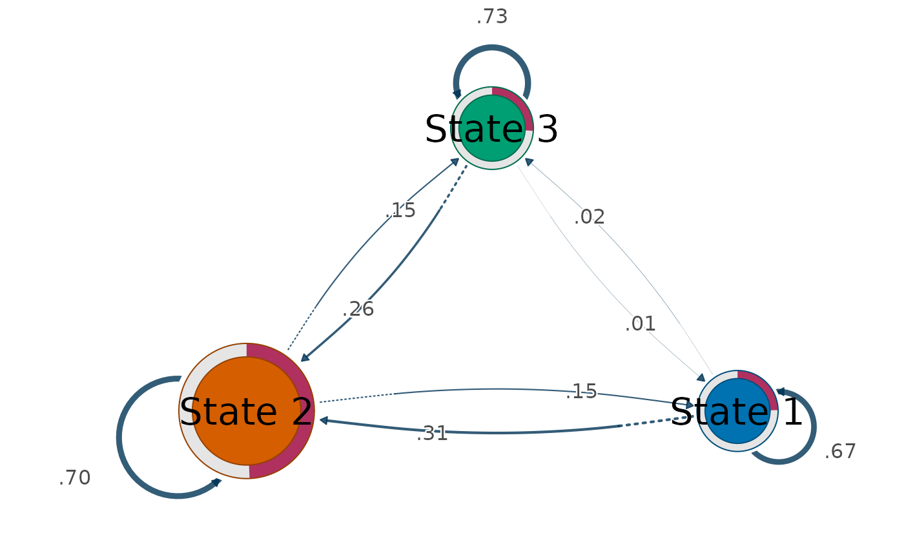
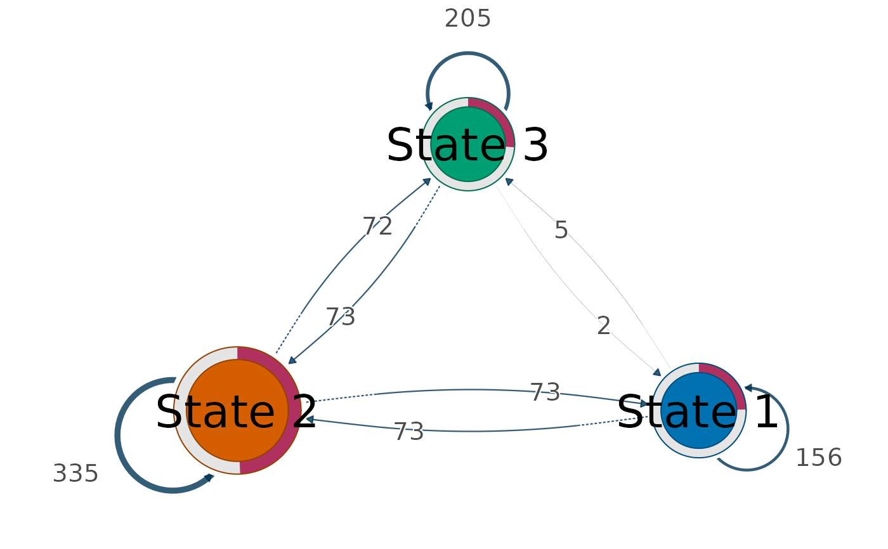
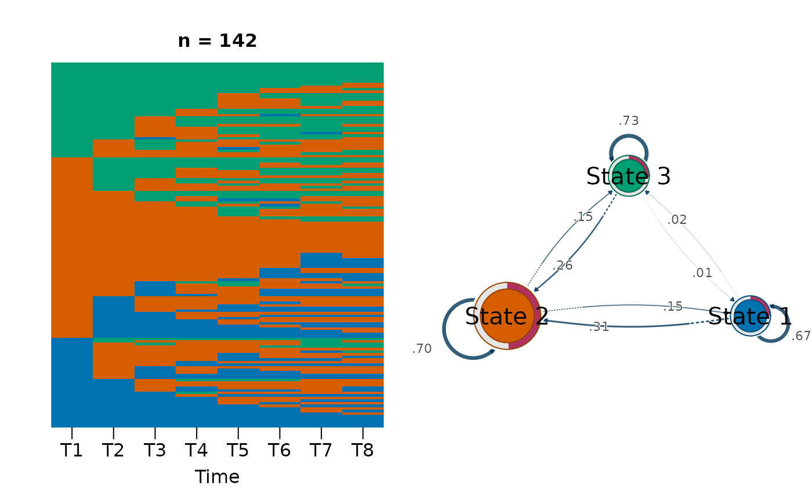

Draws states as nodes and transitions as directed edges, with node size
encoding a centrality of the transition network. The network comes from
Nestimate::build_tna() and the centralities from
Nestimate::net_centrality(); cograph::splot() draws it, recognising
the Nestimate object and applying TNA styling, node labels, and
initial-probability donuts automatically.
Usage
transition_plot(x, ...)
# S3 method for class 'vasstra_sequences'
transition_plot(
x,
size = "InStrength",
weights = c("probability", "count"),
loops = FALSE,
size_range = c(8, 18),
sequences = FALSE,
colors = NULL,
main = NULL,
...
)
# S3 method for class 'vasstra_trajectories'
transition_plot(
x,
size = "InStrength",
weights = c("probability", "count"),
loops = FALSE,
size_range = c(8, 18),
sequences = FALSE,
colors = NULL,
main = NULL,
group = NULL,
...
)
# S3 method for class 'vasstra'
transition_plot(x, ...)Arguments
- x
A
vasstra_sequences,vasstra_trajectories, orvasstraobject.- ...
Additional arguments passed to
cograph::splot(), such aslayoutorthreshold.- size
Centrality measure that sets node size, or
"none"to draw every node at one size. Default"InStrength".- weights
"probability"(default) uses row-normalized transition probabilities fromNestimate::build_tna();"count"uses raw transition counts fromNestimate::build_ftna().- loops
Include self-transitions in the computation. Default
FALSE, matchingNestimate::net_centrality().- size_range
Smallest and largest node size. The measure is mapped onto this range anchored at zero, so a state with half the in-strength of the largest draws halfway up the range and sizes stay comparable between plots.
- sequences
Draw the state sequences beside the network, the conventional pairing in which the sequences show the raw data and the network summarises its movement.
FALSE(default) draws the network alone;TRUEadds an index plot;"index","heatmap", or"distribution"choose the sequence view. Both panels are drawn on one device, so a state has the same colour in each.- colors
Optional colors, one per state, in state order. Defaults to the shared VaSStra palette, so the network matches the sequence and state plots. Colors are matched to states by name, so a trajectory that never reaches a state still colours the rest correctly.
- main
Optional plot title.
- group
Optional trajectory label restricting the network to one trajectory's subjects.
Details
Where flow_plot() shows movement resolved over time,
transition_plot() collapses every time step into one network and asks
which states attract movement overall.
See also
transition_centrality() for the numbers without a plot, and
flow_plot() for time-resolved movement.
Examples
# \donttest{
if (requireNamespace("cograph", quietly = TRUE)) {
data("engagement", package = "VaSStra")
fit <- vasstra(engagement, n_states = 3, n_trajectories = 3)
transition_plot(fit)
transition_plot(fit, weights = "count", size = "OutStrength")
transition_plot(fit, sequences = TRUE)
}



# }